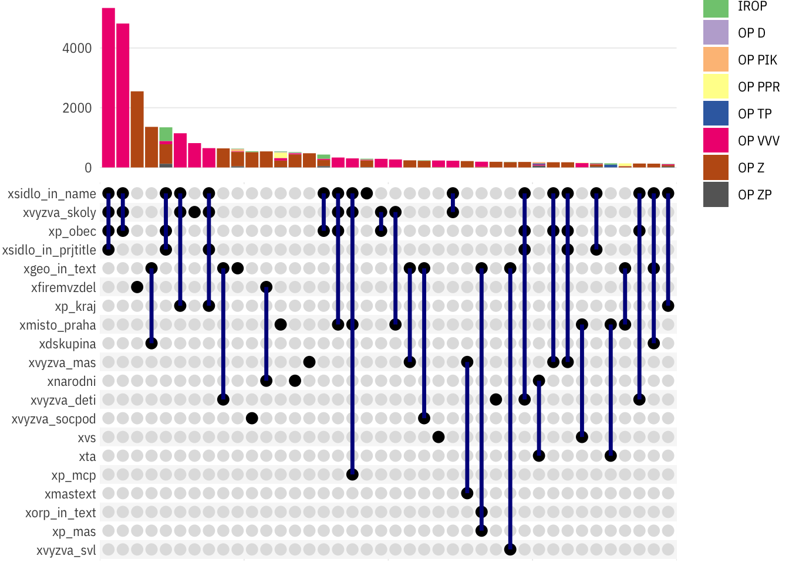
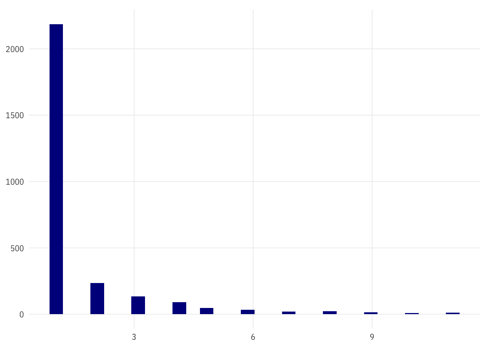

dt <- read_parquet(here::here("data-processed",
"misto_fix-02-gnames.parquet"))
dtl <- read_parquet(here::here("data-processed",
"misto_fix-02-gnames_long-geo.parquet"))
prj_meta <- read_parquet(here::here("data-processed", "prj-esif-meta.parquet"))
ops <- read_parquet(here::here("data-processed", "op-codes.parquet"))
vyzvy <- read_parquet(here::here("data-processed", "vyzvy-codes.parquet"))
ids_and_names <- read_parquet(here::here("data-processed",
"czso-ids-all.parquet"))
dt_geostructure_byprj <- read_parquet(here::here("data-processed", "dt_geostructure_by-prj.parquet"))
dt_geostructure_bylvl <- read_parquet(here::here("data-processed", "dt_geostructure_by-lvl.parquet"))
dt_geostatus <- read_parquet(here::here("data-processed", "projects-geo-check-groups.parquet"))
source(here::here("read_metadata.R"))dts <- dt %>%
select(op_id, starts_with("prj_"), starts_with("p_"), -prj_radek) %>%
distinct()orgs <- read_parquet(here::here("data-processed", "orgs_sp.parquet"))prj_no_obec <- read_parquet(here::here("data-processed", "prj_id_noobec.parquet"))zuj_geo <- read_rds(here::here("data-processed", "geo_zuj-all.rds"))
obce_geo <- read_rds(here::here("data-input", "obce_ruian.rds"))dtl_noobec <- dtl %>%
filter(prj_id %in% prj_no_obec$prj_id) %>%
drop_na(value)handlers(handler_progress(format = "[:bar] :percent ETA: :eta",
complete = "◼",
incomplete = " ",
current = "▸"))library(tidyverse)
library(furrr)
library(tictoc)
library(progressr)
library(arrow)
tic()
dtl_pcheck_file <- here::here("data-processed", "dtl-geocheck-pcheck.parquet")
if (file.exists(dtl_pcheck_file)) {
dtl_noobec_pcheck <- read_parquet(dtl_pcheck_file)
} else {
plan(multiprocess)
with_progress(
{
dtl_noobec_forcheck <- dtl_noobec %>%
filter(typ == "id") %>%
mutate(sidlo_level = "obec") %>%
# sample_n(1000) %>%
filter(TRUE)
p <- progressor(along = dtl_noobec_forcheck$prj_id)
dtl_noobec_pcheck <- dtl_noobec_forcheck %>%
mutate(sidlo_in_geo = future_pmap_lgl(list(p_sidlo_id,
value,
sidlo_level,
level),
function(first, second, third, fourth) {
p(sprintf("x=%s", first))
is_parent(first, second, third, fourth, ids)
}))
})
toc()
write_parquet(dtl_noobec_pcheck, dtl_pcheck_file)
}dtl_noobec_pcheck %>%
group_by(prj_id) %>%
filter(level == min(level)) %>%
filter(n() == 1) %>%
ungroup() %>%
count(op_id, level, sidlo_in_geo) %>%
spread(sidlo_in_geo, n)prijemci_noobec <- dtl %>%
select(starts_with("p_")) %>%
distinct(p_ico, .keep_all = T) %>%
left_join(orgs %>%
select(p_ico = ico, druhuj_nazev, poddruhuj_nazev) %>%
distinct(p_ico, .keep_all = T))## Joining, by = "p_ico"dtl_noobec %>%
distinct(op_id, prj_id) %>%
count(op_id)dt_geostructure_byprj %>%
count(op_id, minlevel, wt = length(unique(prj_id))) %>%
spread(op_id, n)dtl_noobec_geocount <- dtl_noobec %>%
filter(typ == "nazev") %>%
group_by(prj_id, op_id) %>%
mutate(minlevel = min(level)) %>%
filter(level == minlevel) %>%
mutate(n_units = length(unique(value))) %>%
ungroup() %>%
arrange(prj_id, prj_radek)dtl_noobec_geocount %>%
filter(level == "kraj", n_units %in% c(11, 12)) %>%
distinct(p_nazev, prj_id, prj_nazev, value, n_units)dtl_noobec_geocount %>%
count(op_id, level, n_units, wt = length(unique(prj_id))) %>%
spread(op_id, n) %>%
group_by(level) %>%
slice_max(n_units, n = 4)prijemci_public <- prijemci_noobec %>%
drop_na(druhuj_nazev) %>%
pull(p_ico)
write_rds(prijemci_public, here::here("data-processed", "prijemci_public.rds"))dtl_noobec %>%
select(op_id, prj_id, p_ico) %>%
distinct() %>%
mutate(p_is_public = p_ico %in% prijemci_public) %>%
count(op_id, p_is_public) %>%
spread(p_is_public, n) %>%
mutate(share = `TRUE`/(`FALSE` + `TRUE`)) %>%
arrange(desc(share))dtl_noobec %>%
select(op_id, prj_id, p_ico) %>%
distinct() %>%
left_join(prijemci_noobec %>%
select(p_ico, druhuj_nazev, poddruhuj_nazev)) %>%
drop_na(druhuj_nazev) %>%
count(druhuj_nazev, sort = T)## Joining, by = "p_ico"dtl_noobec %>%
select(op_id, prj_id, p_ico) %>%
distinct() %>%
left_join(prijemci_noobec %>%
select(p_ico, druhuj_nazev, poddruhuj_nazev)) %>%
drop_na(druhuj_nazev) %>%
count(druhuj_nazev, poddruhuj_nazev, sort = T)## Joining, by = "p_ico"Čili hlavně školy.
dtl_noobec %>%
select(op_id, prj_id, p_ico) %>%
distinct() %>%
left_join(prijemci_noobec %>%
select(p_ico, druhuj_nazev, poddruhuj_nazev)) %>%
drop_na(druhuj_nazev) %>%
count(op_id, druhuj_nazev, sort = T) %>%
spread(op_id, n)## Joining, by = "p_ico"V OP VVV to snad budou školy vedené jako příspěvkovky obcí.
V OP Z máme cca 1300 projektů obcí, cca 800 příspěvkovek (čích?)
Co naopak - kolik jich chybí?
dtl_noobec %>%
select(op_id, prj_id, p_ico) %>%
distinct() %>%
left_join(prijemci_noobec %>%
select(p_ico, druhuj_nazev, poddruhuj_nazev)) %>%
filter(is.na(druhuj_nazev)) %>%
count(op_id, sort = T) ## Joining, by = "p_ico"dtl_noobec %>%
select(op_id, prj_id, p_ico) %>%
distinct() %>%
left_join(prijemci_noobec %>%
select(p_ico, druhuj_nazev, poddruhuj_nazev)) %>%
drop_na(druhuj_nazev) %>%
count(op_id, druhuj_nazev, poddruhuj_nazev, sort = T) %>%
spread(op_id, n)## Joining, by = "p_ico"Čili v OP VVV jde prevážně o školy.
Příspěvkovky v OP Z převážně obec a kraj.
texty <- dtl %>%
filter(prj_id %in% prj_no_obec$prj_id,
!p_ico %in% prijemci_public) %>%
distinct(prj_nazev, prj_anotace, p_ico, p_nazev, prj_id) %>%
# sample_n(1000) %>%
left_join(prj_meta) %>%
left_join(vyzvy)## Joining, by = "prj_id"## Joining, by = "vyzva_id"zuj_nazvy0 <- zuj_geo %>%
st_set_geometry(NULL) %>%
bind_rows(obce_geo %>%
st_set_geometry(NULL) %>%
mutate(typuj = "obec"))
zuj_a_obce <- zuj_nazvy0 %>%
select(kod, nazev, lau2_kod) %>%
separate(lau2_kod, into = c(NA, "obec_id")) %>%
left_join(ids_and_names %>% select(obec_id, obec_nazev)) %>%
distinct()## Joining, by = "obec_id"zuj_nazvy <- zuj_nazvy0 %>%
select(kod, nazev, starts_with("mluv_pad_"), typuj) %>%
pivot_longer(c(nazev, starts_with("mluv"))) %>%
separate_rows(value, sep = ";") %>%
drop_na(value) %>%
distinct(kod, value, typuj, .keep_all = T) %>%
mutate(value = str_squish(value),
value = paste0("\\b", value, "\\b")) %>%
ungroup()
detect_any_name <- function(txt, nazvy) {
check_rslt <- map_lgl(nazvy$value, ~grepl(.x, txt))
# print(all(!check_rslt))
if(any(check_rslt)) {
nazvyn <- nazvy %>%
filter(check_rslt) %>%
group_by(kod) %>%
filter(nchar(value) == max(nchar(value), na.rm = T))
rslt <- as.list(unique(nazvyn$kod))
} else {
rslt <- as.list(character())
}
# print(nrow(nazvyn))
# nazvyn <- zuj_nazvy[check_rslt,]
# nazvyn <- nazvyn[nchar(nazvyn$value) == max(nchar(nazvyn$value)),]
return(rslt)
}
# detect_any_name("chomutov a most")
# detect_any_name("Most")
# detect_any_name("Chomutov")
# detect_any_name("Most, Chomutov")
# detect_any_name("Chomutov, Most")
#
# detect_any_name("Praha Brno")
# detect_any_name("Brno Praha")
# detect_any_name("Praha Opava")
#
# detect_any_name("Bohuňovice")
# detect_any_name("Bohuňov")
# detect_any_name("Brně")
# detect_any_name("Bohuňovicemi")
# detect_any_name("Bohuňovic")
# detect_any_name("fshdkjsdhfk")geonames_in_prjtext_file <- here::here("data-processed", "geonames_in_prjtexts.parquet")
if(file.exists(geonames_in_prjtext_file)) {
prj_geoname_matched <- read_parquet(geonames_in_prjtext_file)
} else {
handlers(handler_progress(format = "[:bar] :percent ETA: :eta",
complete = "◼",
incomplete = " ",
current = "▸"))
plan(multiprocess)
tictoc::tic()
with_progress({
dtx <- texty
# dtx <- texty[1:200,]
p <- progressor(along = dtx$prj_id)
prj_geoname_matched <- dtx %>%
mutate(geonames_in_prjtitle = future_map(prj_nazev,
function(x) {
p(sprintf("x=%s", x))
detect_any_name(x, zuj_nazvy)
}),
geonames_in_prjtitle = map(geonames_in_prjtitle, as.character),
geonames_in_prjanot = future_map(prj_anotace,
function(x) {
p(sprintf("x=%s", x))
detect_any_name(x, zuj_nazvy)
}),
geonames_in_prjanot = map(geonames_in_prjanot, as.character),
)
})
tictoc::toc()
prj_geoname_matched <- prj_geoname_matched %>%
select(prj_id, geonames_in_prjanot, geonames_in_prjtitle)
write_parquet(prj_geoname_matched,
geonames_in_prjtext_file)
}prj_geoname_validated_file <- here::here("data-processed", "geonames_in_prjtexts-validated.parquet")
if(file.exists(prj_geoname_validated_file)) {
prj_geoname_checked2 <- read_parquet(prj_geoname_validated_file)
} else {
typuzemi <- zuj_nazvy %>%
select(uzemi = kod, uzemi_level = typuj) %>%
mutate(uzemi_level = recode(uzemi_level, momc = "zuj")) %>%
distinct()
prj_geoname_for_check <- prj_geoname_matched %>%
unnest(cols = c(geonames_in_prjanot)) %>%
mutate(kde = "anotace") %>%
select(prj_id, kde, uzemi = geonames_in_prjanot) %>%
bind_rows(prj_geoname_matched %>%
unnest(cols = c(geonames_in_prjtitle)) %>%
select(prj_id, uzemi = geonames_in_prjtitle) %>%
mutate(kde = "nazev")) %>%
distinct(prj_id, uzemi, kde) %>%
left_join(dtl %>%
filter(typ == "id") %>%
select(prj_id, level, value)) %>%
left_join(typuzemi)
plan(multiprocess)
with_progress({
# group_by(prj_id) %>%
# nest() %>%
# ungroup() %>%
# sample_n(100) %>%
# unnest() %>%
p2 <- progressor(along = prj_geoname_for_check$prj_id)
prj_geoname_checked <- prj_geoname_for_check %>%
mutate(obec_in_misto = future_pmap_lgl(list(uzemi,
value,
uzemi_level,
level),
function(first, second, third, fourth) {
# p2(sprintf("x=%s", second))
p2()
is_parent(first, second, third, fourth, ids_short)
}))
})
prj_geoname_checked %>%
group_by(prj_id) %>%
summarise(any_obec_in_misto = any(obec_in_misto)) %>%
ungroup() %>%
count(any_obec_in_misto)
prj_geoname_checked2 <- prj_geoname_checked %>%
left_join(dts) %>%
filter(obec_in_misto) %>%
left_join(zuj_a_obce %>%
rename(uzemi = kod, uzemi_nazev = nazev) %>%
distinct()) %>%
mutate(prjtxt = if_else(kde == "anotace", prj_anotace, prj_nazev),
orp_obec = str_detect(prjtxt,
paste("(ORP|rozšířenou působností)", obec_nazev)),
uzemi_is_sidlo = str_sub(p_sidlo_id, 6, 11) == obec_id,
okres_obec = str_detect(prjtxt, paste("[Oo]kres([eu]?)", obec_nazev))) %>%
# vyhodit z celého seznamu detekovaných ta místa, kde
# detekujeme např. "okres X" a přitom okres X neexistuje
filter(!(okres_obec & !obec_nazev %in% ids_and_names$okres_nazev),
!(orp_obec & !obec_nazev %in% ids_and_names$orp_nazev))
write_parquet(prj_geoname_checked2, prj_geoname_validated_file)
}
prj_ids_with_geonames <- prj_geoname_checked2 %>% distinct(prj_id) %>% pull()
prj_orp_in_txt <- unique(prj_geoname_checked2[prj_geoname_checked2$orp_obec,])
prj_okres_in_txt <- unique(prj_geoname_checked2[prj_geoname_checked2$okres_obec,])prj_geoname_checked2 %>%
count(orp_obec, okres_obec)prj_geoname_checked2 %>%
distinct(prj_id, op_id, okres_obec, orp_obec) %>%
count(op_id, okres_obec, orp_obec) %>%
spread(op_id, n)prj_geoname_checked2 %>%
filter(op_id == "OP Z", okres_obec | orp_obec)dtl_opz_noobec_nopublic <- dtl_noobec %>%
drop_na(value) %>%
filter(op_id == "OP Z") %>%
left_join(prj_meta) %>%
left_join(vyzvy) %>%
filter(!(p_ico %in% prijemci_public)) %>%
distinct(prj_id, prj_nazev, prj_anotace, p_nazev, p_sidlo_nazev, p_ico,
vyzva, vyzva_id, vyzva_nazev)## Joining, by = c("op_id", "prj_id")## Joining, by = "vyzva_id"p_n <- dtl_opz_noobec_nopublic %>%
summarise(n = n_distinct(p_ico))V OP Z máme 6613 unikátních žadatelů.
Podle projektů
ds_nazvy <- dtl_opz_noobec_nopublic %>%
mutate(ds = str_detect(prj_nazev, "[Dd]ětsk.*[Ss]kupin")) %>%
count(ds)
ds_nazvyds_vyzvy <- dtl_opz_noobec_nopublic %>%
mutate(ds = str_detect(vyzva_nazev, "[Dd]ětsk.*[Ss]kupin")) %>%
count(ds, vyzva_nazev, vyzva_id) %>%
filter(ds)
ds_vyzvyds_vyzvy$vyzva_id## [1] "03_19_101" "03_19_103" "03_19_112" "03_19_113" "03_17_073" "03_17_074" "03_18_133" "03_16_132" "03_19_111"dtl_vvv_noobec_nopublic <- dtl_noobec %>%
filter(op_id == "OP VVV") %>%
drop_na(value) %>%
filter(!(p_ico %in% prijemci_public)) %>%
distinct(prj_id, prj_nazev, prj_anotace, p_nazev, p_sidlo_nazev, p_ico)dtl_vvv_noobec_nopublic %>%
left_join(prj_meta) %>%
left_join(vyzvy) %>%
count(vyzva_nazev, sort = T)## Joining, by = "prj_id"## Joining, by = "vyzva_id"dtl_vvv_noobec_nopublic %>%
left_join(prj_meta) %>%
left_join(vyzvy) %>%
ungroup() %>%
mutate(wt = str_detect(vyzva_nazev, "[Šš]ablon")) %>%
count(wt)## Joining, by = "prj_id"## Joining, by = "vyzva_id"dtl_pik_noobec_nopublic <- dtl_noobec %>%
drop_na(value) %>%
filter(op_id == "OP PIK") %>%
filter(!(p_ico %in% prijemci_public)) %>%
distinct(prj_id, prj_nazev, prj_anotace, p_nazev, p_sidlo_nazev, p_ico,
p_sidlo_id, level, typ, value)dtl_noobec %>%
filter(op_id == "OP PIK") %>%
distinct(prj_id, p_ico) %>%
summarise(public = p_ico %in% prijemci_public) %>%
count(public)dtl_pik_noobec_nopublic %>%
distinct(prj_id) %>%
left_join(prj_meta) %>%
left_join(vyzvy) %>%
ungroup() %>%
count(vyzva_nazev, sort = T)## Joining, by = "prj_id"## Joining, by = "vyzva_id"dtl_pik_noobec_nopublic %>%
group_by(prj_id) %>%
mutate(nlines = n())dtl_pik_noobec_nopublic %>%
filter(typ == "id", level == "kraj") %>%
mutate(p_sidlo_kraj_id = str_sub(p_sidlo_id, 1, 5),
p_sidlo_in_kraj = p_sidlo_kraj_id == value) %>%
distinct(prj_id, p_sidlo_in_kraj) %>%
group_by(prj_id) %>%
mutate(nlines = n()) %>%
ungroup() %>%
count(nlines, p_sidlo_in_kraj)Takže u většiny můžeme počítat s tím, že mají sídlo v kraji, do kterého označili dopad.
NB projekt CZ.01.3.12/0.0/0.0/15_026/0007008 (E.ON) - 3 kraje a všechny jejich okresy a ORPy. též projekty ČEZ distribuce (IČO - 24729035) - několik projektů, každý s několika okresy.
prj_geoname_matched <- read_parquet(here::here("data-processed",
"geonames_in_prjtexts.parquet")) %>%
mutate(n_names_in_title = map_int(geonames_in_prjtitle, length),
n_names_in_anot = map_int(geonames_in_prjanot, length))
prj_with_matched_geoname <- prj_geoname_matched %>%
filter(n_names_in_title > 0 | n_names_in_anot > 0) %>%
pull(prj_id)dt_noobec_basic <- dtl_noobec %>%
select(starts_with("prj_"), starts_with("p_"), -prj_radek, op_id) %>%
distinct() %>%
left_join(prj_meta) %>%
left_join(vyzvy) %>%
left_join(dt_geostructure_byprj) %>%
select(-op_tnum, -vyzva_cislo, -prj_num) %>%
left_join(orgs %>%
select(p_ico = ico, druhuj_nazev, poddruhuj_nazev) %>%
distinct(p_ico, .keep_all = T)) %>%
mutate(p_nazev_beznno = str_remove_all(p_nazev, mas_pravniformy_regex))## Joining, by = c("prj_id", "op_id")## Joining, by = "vyzva_id"## Joining, by = c("prj_id", "op_id")## Joining, by = "p_ico"prj_id_nonhier <- dt_geostatus %>% filter(geostatus == "více míst nehierarchicky") %>%
pull(prj_id)vyzvy_mas <- vyzvy %>%
filter(str_detect(vyzva_nazev, "[Mm]ístní akční sk|[Mm]ístních akčních sk|MAS"),
str_detect(vyzva_id, "^0[1-9]_"))prj_id_misto_onlypraha <- dtl_noobec %>%
filter(typ == "id") %>%
left_join(dt_geostructure_byprj) %>%
filter(n_units == 1) %>%
filter(value %in% c("CZ010", "CZ010554782", "CZ0100")) %>%
pull(prj_id)## Joining, by = c("op_id", "prj_id")length(prj_id_misto_onlypraha)## [1] 3302mas_texty <- mas_all %>%
mutate(mas_nazev_alt = mas_nazev_simple %>%
str_replace("MAS [-\\-]", "MAS") %>%
str_replace("Místní akční skupina", "MAS")) %>%
distinct(mas_nazev, mas_nazev_alt, mas_nazev_simple)
mas_nazvy <- c(mas_all$mas_nazev, mas_all$mas_nazev_simple, mas_texty$mas_nazev_alt) %>% unique()
mas_regex <- paste(unique(mas_nazvy), collapse = "|") %>%
str_replace_all("\\.", "\\\\.") %>%
str_replace_all("\\+", "\\\\+")
komunal_ico <- orgs %>%
select(druhuj_nazev, ico, poddruhuj_nazev) %>%
filter(druhuj_nazev == "Obce" | poddruhuj_nazev == "Příspěvkové organizace zřízené obcí") %>%
distinct()
dt_mas <- dt %>%
filter(!p_nazev %in% mas_nazvy) %>%
distinct(prj_id, prj_nazev, p_nazev, prj_anotace, p_ico, op_id) %>%
mutate(masnazev = str_extract(prj_nazev, mas_regex),
masanot = str_extract(prj_anotace, mas_regex)) %>%
filter(!is.na(masnazev) | !is.na(masanot)) %>%
mutate(mastext = if_else(is.na(masnazev), masanot, masnazev) %>%
str_remove_all(mas_pravniformy_regex)) %>%
filter(mastext != "Bystřička")
mas_rematcher <- mas_texty %>%
mutate(origo = mas_nazev) %>%
gather("typ", "nazev", -mas_nazev_simple) %>%
distinct()
setdiff(dt_mas$mastext, mas_rematcher$nazev)## [1] "MAS - Partnerství Moštěnka"dt_mas_ided <- dt_mas %>%
left_join(mas_rematcher %>% select(mastext = nazev, mas_nazev_simple)) %>%
distinct(prj_id, mas_nazev_simple) %>%
mutate(xmastext = T)## Joining, by = "mastext"Takže z OP Z by mělo jít dobře dovodit místo realizace - podle výzev, adresy příjemce a případně jména obce detekovaného z textů - u těchto výzev:
vyzvy_deti <- vyzvy %>%
filter(str_detect(vyzva_nazev, "péče|PÉČE"), str_detect(vyzva_nazev, "děti|DĚTI"),
str_detect(vyzva_id, "^0[36]_"))
vyzvy_svl <- vyzvy %>%
filter(str_detect(vyzva_nazev, "SVL"),
str_detect(vyzva_id, "^0[36]_"))
vyzvy_socpod <- vyzvy %>%
filter(str_detect(vyzva_nazev, "((sociální)|(SOCIÁLNÍ))(ho|HO)?.*((podni)|(PODNI))"),
str_detect(vyzva_id, "^0[36]_"))
vyzvy_detivyzvy_svlvyzvy_socpoddt_noobec_basic %>%
filter(vyzva_id %in% c(vyzvy_socpod$vyzva_id, vyzvy_svl$vyzva_id, vyzvy_deti$vyzva_id)) %>%
count(vyzva_nazev, sort = T)Zkontrolovat ty, u kterých sídlo nemusí indikovat místo realizace
Ad 2 toto jsou nejčastější žadatelé
dt_noobec_basic %>%
filter(op_id == "OP Z") %>%
filter(vyzva_id %in% c(vyzvy_socpod$vyzva_id, vyzvy_svl$vyzva_id, vyzvy_deti$vyzva_id)) %>%
count(p_nazev, sort = T) %>%
mutate(cumsum = cumsum(n),
cumshare = cumsum/sum(n)) %>%
head(20)pha_vyzvy <- vyzvy %>%
filter(str_detect(vyzva_nazev, "v Praze|pro Prahu|(pro|v) hl\\. m\\. Pra(hu|ze)"),
str_detect(vyzva_id, "^03_"))
pha_vyzvydt_noobec_diag <- dt_noobec_basic %>%
left_join(dt_geostructure_byprj %>% select(prj_id, maxlevel, unique_units)) %>%
left_join(dt_mas_ided) %>%
replace_na(list(druhuj_nazev = "nic",
poddruhuj_nazev = "nic",
xmastext = FALSE)) %>%
mutate(xp_public = druhuj_nazev != "nic",
xnonhierarch = prj_id %in% prj_id_nonhier,
xsidlo_in_name = str_detect(p_nazev, fixed(dt_noobec_basic$p_sidlo_nazev)),
xsidlo_in_prjtitle = str_detect(prj_nazev,
fixed(dt_noobec_basic$p_sidlo_nazev)),
xp_mas = p_nazev_beznno %in% unique(mas_all$mas_nazev_simple),
xp_kraj = druhuj_nazev == "Kraje" |
poddruhuj_nazev == "Příspěvkové organizace zřízené krajem",
xp_obec = druhuj_nazev == "Obce" |
poddruhuj_nazev == "Příspěvkové organizace zřízené obcí",
xp_mc = poddruhuj_nazev %in% c("Městská část"),
xp_mcp = poddruhuj_nazev %in% c("Příspěvkové organizace zřízené MČ"),
xvyzva_mas = vyzva_id %in% vyzvy_mas$vyzva_id,
xvyzva_skoly = str_detect(vyzva_nazev,
"([Šš]ablon)|([Rr]ozvoj škol)|([Pp]odpora škol)"),
xvyzva_vs = str_detect(vyzva_nazev, "(VŠ)|([Vv]ysok.+škol)") &
str_detect(vyzva_id, "^0[0-9]_"),
xorp_in_text = prj_id %in% prj_orp_in_txt$prj_id,
xokres_in_text = prj_id %in% prj_okres_in_txt$prj_id,
xta = op_kat == "125",
xkapnno = vyzva_nazev == "Budování kapacit a profesionalizace NNO" & n_units == 1,
xvs = str_detect(p_nazev, "[Vv]ysoká škola|[Uu]niver[sz]ita|[Vv]ysoké učení"),
xnarodni = minlevel == "kraj" & unique_units > 11,
xfiremvzdel = str_detect(vyzva_nazev, "[Pp]odnikové vzdělávání"),
xgeo_in_text = prj_id %in% prj_ids_with_geonames,
xzatepleni = str_detect(vyzva_nazev, "ENERGETICKÉ ÚSPORY V BYTOVÝCH DOMECH"),
xvyzva_praha = vyzva_id %in% pha_vyzvy$vyzva_id,
xmisto_praha = prj_id %in% prj_id_misto_onlypraha,
xvyzva_socpod = vyzva_id %in% vyzvy_socpod$vyzva_id,
xvyzva_svl = vyzva_id %in% vyzvy_svl$vyzva_id,
xvyzva_deti = vyzva_id %in% vyzvy_deti$vyzva_id,
xdskupina = vyzva_id %in% ds_vyzvy$vyzva_id) %>%
mutate(matched = xdskupina | xsidlo_in_name | xvyzva_mas | xp_mas | xmastext |
xzatepleni | xp_kraj | xp_obec | xta | xkapnno |
# xp_public |
xvyzva_deti | xvyzva_svl | xvyzva_socpod |
xorp_in_text | xvyzva_skoly | xfiremvzdel |
xvyzva_vs | xnarodni | xvyzva_praha | xvs | xmisto_praha
| xgeo_in_text
)## Joining, by = c("prj_id", "unique_units", "maxlevel")## Joining, by = "prj_id"write_parquet(dt_noobec_diag, here::here("data-processed", "dtl-noobec-diag.parquet"))dt_noobec_diag %>%
group_by(op_id) %>%
select(starts_with("x"), matched) %>%
skimr::skim() %>%
select(op_id, skim_variable, logical.mean) %>%
mutate(logical.mean = round(logical.mean, 2)) %>%
spread(op_id, logical.mean)## Adding missing grouping variables: `op_id`dt_noobec_diag %>%
count(op_id, matched) %>%
spread(matched, n)Co dělat s TP?
dt_noobec_diag %>%
filter(xta) %>%
count(minlevel, n_units)library(ggupset)
diag_for_upset <- dt_noobec_diag %>%
# filter(op_id == "OP VVV") %>%
select(prj_id, op_id, starts_with("x"), -xp_public) %>%
gather("var", "val", -prj_id, -op_id) %>%
filter(val) %>%
group_by(prj_id, op_id) %>%
summarise(xvars = list(var))## `summarise()` regrouping output by 'prj_id' (override with `.groups` argument)ggplot(diag_for_upset) +
geom_bar(mapping = aes(x = xvars, fill = op_id), position = "stack") +
scale_x_upset(n_intersections = 40) +
# scale_y_continuous(limits = c(0, 6e4)) +
# scale_y_log10(limits = c(1, 1e5), n.breaks = 10,
# labels = scales::label_number(1)) +
# scale_y_continuous(trans = scales::log_trans(), breaks = scales::pretty_breaks()) +
ptrr::theme_ptrr(plot.margin = margin(l = 40)) +
scale_fill_brewer(type = "qual")## Warning: Removed 5812 rows containing non-finite values (stat_count). Potenciální problém: firemní vzdělávání + plošné projekty (> 11 krajů):
dt_noobec_diag %>%
filter(xfiremvzdel) %>%
left_join(dt_geostructure_byprj) %>%
select(prj_id, unique_units, druhuj_nazev, poddruhuj_nazev) %>%
left_join(dts) %>%
count(unique_units, druhuj_nazev)## Joining, by = c("prj_id", "op_id", "unique_units", "n_levels", "maxlevel", "minlevel", "n_units", "multilevel")## Joining, by = "prj_id"Při pohledu na ty projekty je to většinou nesmysl - je tam ale pár státních podniků, bank
prj_id_unmatched <- dt_noobec_diag %>%
filter(!matched) %>%
pull(prj_id)Na jaké úrovni jsou lokalizovány nezachycené projekty?
dt_geostructure_byprj %>%
filter(prj_id %in% prj_id_unmatched) %>%
count(op_id, minlevel) %>%
spread(minlevel, n)dt_geostructure_byprj %>%
filter(prj_id %in% prj_id_unmatched) %>%
count(op_id, minlevel, n_units) %>%
spread(minlevel, n)dt_noobec_diag %>%
filter(op_id == "OP Z" & !matched) %>%
count(vyzva_nazev, vyzva_id, sort = T)dtl %>%
filter(prj_id %in% prj_id_unmatched) %>%
head()dt_noobec_diag %>%
filter(op_id == "OP Z" & !matched) %>%
ggplot() +
geom_histogram(aes(n_units))## `stat_bin()` using `bins = 30`. Pick better value with `binwidth`.
dt_noobec_diag %>%
filter(!matched) %>%
group_by(op_id) %>%
count(druhuj_nazev, poddruhuj_nazev, sort = T)dt_noobec_diag %>%
# filter(druhuj_nazev == "OSS" & !matched) %>%
filter(!matched) %>%
count(op_id, vyzva_nazev, sort = T) dt_noobec_diag %>%
filter(op_id == "OP Z" & !matched) %>%
count(xgeo_in_text)dt_noobec_diag %>%
filter(op_id == "OP VVV" & !matched) %>%
count(vyzva_nazev, sort = T)dt_noobec_diag %>%
filter(op_id == "OP Z" & !matched) %>%
group_by(vyzva_nazev, vyzva_id) %>%
summarise(mean_ngeo = mean(n_units), pocet = n(),
maxgeo = max(n_units),
share_1geo = sum(n_units == 1)/n()) %>%
mutate(whtvr = mean_ngeo / pocet / share_1geo) %>%
arrange(whtvr)## `summarise()` regrouping output by 'vyzva_nazev' (override with `.groups` argument)dt_noobec_diag %>%
filter(op_id == "OP PIK" & !matched) %>%
count(vyzva_nazev, vyzva_id, sort = T)dt_noobec_diag %>%
filter(op_id == "OP D" & !matched) %>%
count(vyzva_nazev, vyzva_id, sort = T)dt_noobec_diag %>%
filter(op_id == "IROP" & !matched) %>%
filter(minlevel == "kraj") %>%
count(vyzva_nazev, vyzva_id, sort = T)